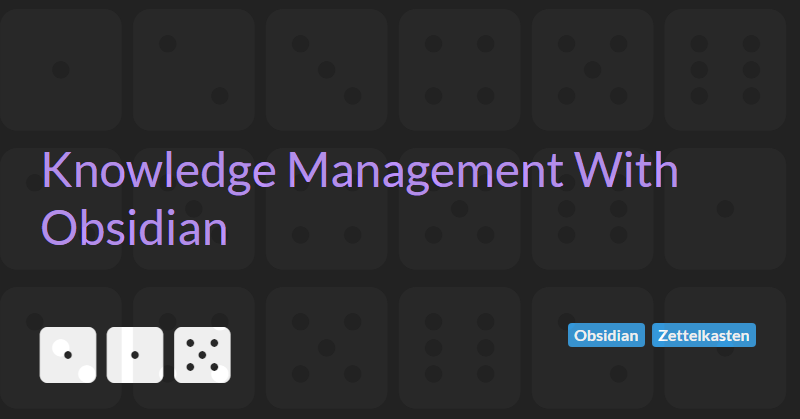

Knowledge Management With Obsidian
I work in the technology industry - which is a constantly changing landscape of tools, techniques, languages, and architectures. Keeping up is hard and requires constant effort. Taking notes and building up a personal knowledge base of reference articles linked to my notes helps me. One tool I've found invaluable in this task is Obsidian.
There a numerous note taking apps but, in my opinion, Obsidian is one of the best. Its a private and flexible writing app that adapts to the way you think and is free for personal use.
In this article I will outline some of the benefits of Obsidian as a note taking app and how you can use it to build a personal knowledge base.
Creating Content
When using Obsidian to take notes you create content using Markdown . Markdown is a lightweight markup language for creating formatted text.
Being a text format, you could use any plain-text editor to create Markdown content. But why not use Obsidian's built-in Markdown editor? It gives you the flexibility of a text editor while providing you with visual feedback that you are writing valid markdown via the live preview. It also supports numerous keyboard shortcuts for formatting content (e.g. ctrl+B for bolding selected text)
Finally, Markdown is widely used for blogging and so if you decide Obsidian isn't for you then you can easily take your content with you to a different application.
Links and the Graph view
The value of content you create is enhanced by links. Links allow you to create connections between your notes. You can then use Obsidian's Graph view to visualise the relationships between your note and find hidden patterns in your thinking through a visually engaging and interactive graph.
Next level notes with Zettlekasten
The Zettelkasten method is a process for thinking and writing that was famously used by Niklas Luhmann - a prolific German sociologist who wrote more than 70 books and nearly 400 scholarly articles in various subjects. It is an effective knowledge management methods and can best be described as an organisation system that helps you organise your knowledge while working (studying or researching).
Used correctly, your Obsidian knowledge base become like a conversation partner and will ultimately make it easier for you to write better, think more clearly, and improve both your long-term learning and understanding.
For more information see:
- How to Take Smart Notes
- 12 Principles For Using Zettelkasten
- How do you use Zettelkasten in Obsidian?
Must have community plugins
Another huge benefit of using Obsidian is the large number of community plugins available that allow you to tailor Obsidian to fit with your personal workflow.
In order to get the best from Obsidian, I recommend using the following plugins.
Obsidian Git is an amazing plugin that allows you to backup your knowledge base to a Git repository - perfect for developers.
Templater a templating language that allows you to insert variables and function results into your noted - a great way of reducing boilerplate and introducing some consistency into the structure of your notes.
Dataview a live index and query engine your personal knowledge base. A great way to automatically create Maps of Content that link related notes together.
Advanced Slides allows you to create reveal.js based presentations in Obsidian. Great for turning your notes into presentations to share your knowledge with the wider community and help raise the bar across the software development industry (as any good software craftsperson should aim to do).
Next Steps
Download the Obsidian app and get started building your own personal knowledge base.